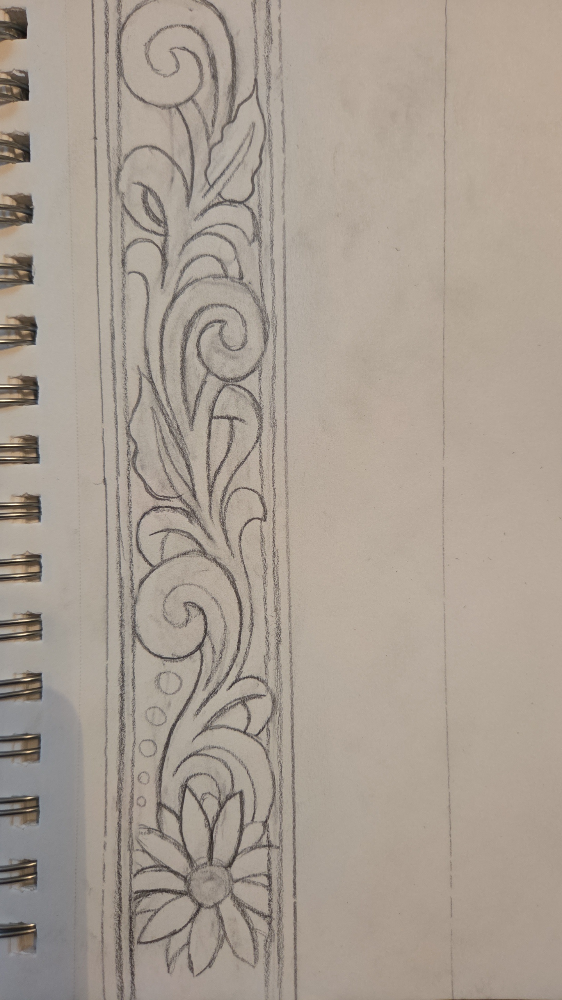

Steps to Leatherworking
Step 1
The first step is creating a template for whatever design you would like on the leather. Coming up with a plan is important in leather design.
Step 2
Cut out the shape of leather needed for your item
Step 3
Wet the leather and transfer the design onto the piece of leather. Grab the swivel knife and carve into the design.
Step 4
Using various tools, bevel and add finishing touches to the design. To bevel, use a beveling tool and a maul to press the wet leather into the design.
Step 5
Let the leather dry and make sure it is conditioned before adding stain and antique
Step 6
Once the stain is dry, sew and add buttons or screws if needed. This is the step to assemble.
Step 7
Add finishing glosses or sealants for the leather to lock in the stain and allow for a cleaner presentation